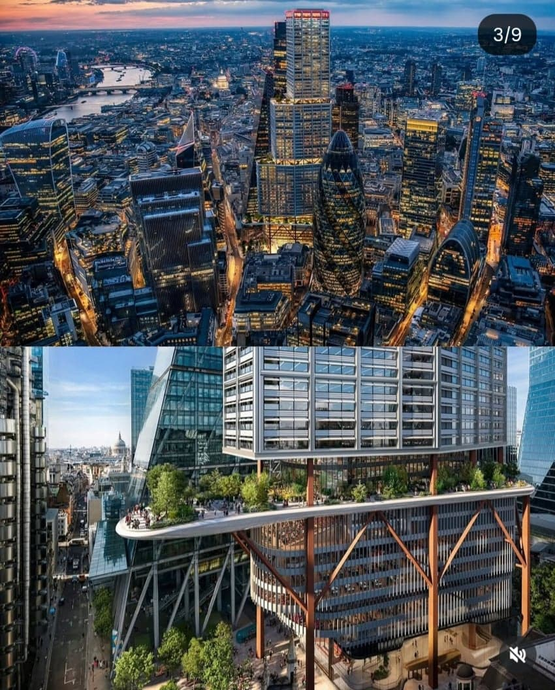
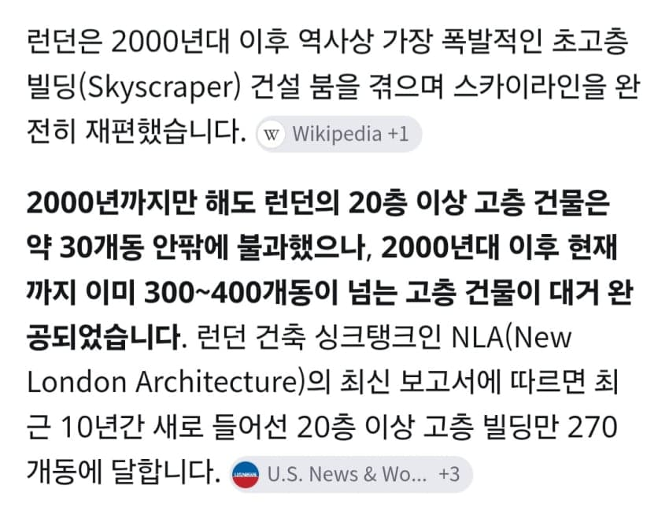

2000년대까지만 해도 런던은 세계도시임에도 불구하고 유럽 도시답게 20층 이상의 고층 건물이 겨우 30개도 안되었으나
2026년 현재는 무려 300개~400개가 넘을정도로 불과 20여년만에 도시 구조가 격변하였고 앞으로 수백개 가량의 고층 빌딩이 추가로 지어질 전망이라
잘하면 2035년즈음에는 유럽의 맨해튼, 유럽의 홍콩과 같은 빌딩숲의 풍경을 런던에서 보게될수도 있다고함
- dc official App
댓글
수집 당시 댓글 77개
ㅇㅇ · 11.10 13:12:52
· 여름불면증 · 11.10 13:15:38
· 여름불면증 · 11.10 13:15:49
· 여름불면증 · 11.10 13:15:55
· 여름불면증 · 11.10 13:16:00
· ㅇㅇ · 11.10 13:19:14
· ㅇㅇ · 11.10 13:32:30
· ㅇㅇ · 11.10 13:32:53
· 00 · 11.11 22:57:45
· ㅇㅇ · 11.11 23:17:50
열등감. 부러웠구나?
· ㅇㅇ · 11.11 23:19:05
· ㅇㅇ · 11.12 10:36:02
· ㅇㅇ · 11.12 11:43:41
· ㅇㅇ · 11.12 14:54:47
ㅇㅇ · 11.10 13:13:01
ㅇㅇ · 11.10 13:13:25
ㅇㅇ · 11.10 13:14:09
· ㅇㅇ · 11.10 13:16:54
· ㅇㅇ · 11.10 13:34:54
· ㅇㅇ · 11.10 13:35:56
· ㅇㅇ · 11.11 23:16:38
· ㅇㅇ · 11.11 23:28:49
땨뗘(봇) · 11.11 22:50:06
Cast_Away · 11.11 22:50:52
ㅇㅇ · 11.11 22:51:32
ㅇㅇ · 11.11 22:51:59
ㅇㅇ · 11.11 22:52:17
ㅇㅇ · 11.11 22:53:27
· ㅇㅇ · 11.11 22:54:49
신 석 열 · 11.11 22:56:10
ㅇㅇ · 11.11 22:57:49
ㅇㅇ · 11.11 22:57:50
ㄹㄹㄹㄹㄹ · 11.11 23:00:01
· ㅇㅇ · 11.11 23:53:46
· ㅇㅇ · 11.12 01:04:38
· ㅇㅇ · 11.12 04:07:58
ㅇㅇ · 11.11 23:01:27
해갤러 · 11.11 23:02:17
ㅇㅇ · 11.11 23:02:37
ㅇㅇ(106.101) · 11.11 23:04:16
ㅇㅇ · 11.11 23:05:32
· ㅇㅇ · 11.11 23:08:10
· ㅇㅇ · 11.11 23:09:28
ㅇㅇ · 11.11 23:07:50
ㅇㅇ · 11.11 23:10:02
ㅇㅇ · 11.11 23:11:07
오호통재라 · 11.11 23:11:54
꾸닝 · 11.11 23:11:58
· ㅇㅇ · 11.11 23:14:04
아너무너무섭다 · 11.11 23:12:59
Adriel · 11.11 23:16:42
ㅇㅇ · 11.11 23:22:50
ㅇㅇ · 11.11 23:25:21
· ㅇㅇ · 11.11 23:25:38
ㅇㅇ · 11.11 23:38:31
· ㅇㅇ · 11.12 08:57:08
ㅇㅇ · 11.11 23:43:43
· ㅇㅇ · 11.12 00:09:56
ㅇㅇ · 11.11 23:44:50
ㅇㅇ · 11.11 23:48:24
환란 전 교회 휴거 · 11.12 00:21:06
ㅇㅇ · 11.12 01:58:55
ㅇㅇ · 11.12 03:20:44
ㅇㅇ · 11.12 04:42:21
ㅇㅇ · 11.12 08:03:25
ㅇㅇ · 11.12 09:06:11
· ㅇㅇ · 11.12 17:33:10
원또 · 11.12 09:10:36
ㅇㅇ · 11.12 09:25:24
ㅇㅇ · 11.12 09:43:58
ㅇㅇ · 11.12 09:51:12
ExcaliburXIV · 11.12 10:37:20
ㅇㅇ · 11.12 11:13:14
ㅇㅇ · 11.12 11:38:26
ㅇㅇ · 11.12 12:05:44
ㅇㅇ · 11.12 12:33:26
ㅇㅇ · 11.12 12:57:49